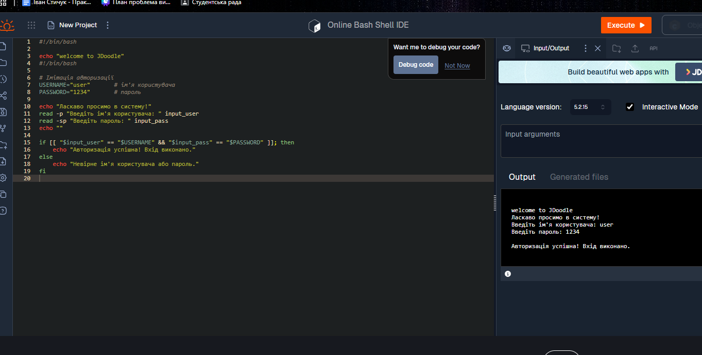

GNU/Linux — це вільна й відкрита операційна система, яка складається з ядра Linux та набору утиліт GNU. Вона є популярною завдяки своїй безпеці, стабільності та можливості безкоштовного використання. Linux використовується на серверах, у суперкомп’ютерах, смартфонах (Android) та вбудованих системах.
Основні переваги GNU/Linux:
Один з найпопулярніших дистрибутивів, простий у використанні. Підходить для початківців. Має зручний графічний інтерфейс та величезну спільноту.
Стабільний і надійний дистрибутив, на якому базується Ubuntu. Часто використовується на серверах.
Офіційно підтримується Red Hat. Часто використовується розробниками, оскільки містить найновіші пакети та технології.
Дистрибутив для досвідчених користувачів. Дає можливість гнучкого налаштування системи з нуля. Має велику документацію (Arch Wiki).
Зручний дистрибутив, схожий на Windows за інтерфейсом. Ідеальний варіант для переходу з Windows на Linux.
Нижче наведено приклади базових команд Linux, які використовуються в терміналі.
Виводить поточний робочий каталог.
pwd
# /home/userВиводить текст у термінал.
echo "Привіт, Linux!"
# Привіт, Linux!Показує список файлів та папок у поточному каталозі.
ls
# Desktop Documents Downloads script.shЗмінює поточний каталог.
cd /home/user/Documents
# Тепер поточний каталог: /home/user/DocumentsСтворює порожній файл.
touch newfile.txt
# Створено файл newfile.txtСтворює нову директорію (папку).
mkdir my_folder
# Створено каталог my_folderКопіює файли або каталоги.
cp file.txt my_folder/
# Скопійовано file.txt у my_folder/Переміщує або перейменовує файли.
mv oldname.txt newname.txt
# oldname.txt перейменовано на newname.txtВидаляє файли.
rm unwanted.txt
# Файл unwanted.txt видаленоПоказує історію виконаних команд у терміналі.
history
# 1 pwd
# 2 ls
# 3 cd DocumentsНижче — приклад простого bash-скрипта, який імітує процес входу: запитує логін та пароль, приховує введення пароля, дозволяє кілька спроб та виводить повідомлення про успіх або помилку.

Linux – найкраща ОС!